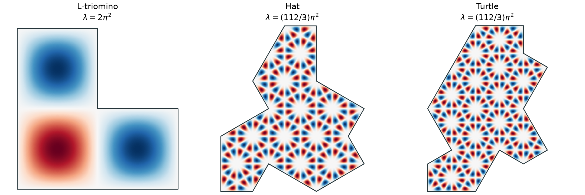
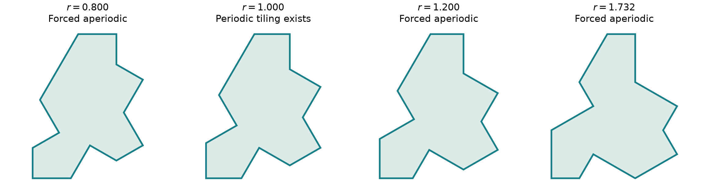
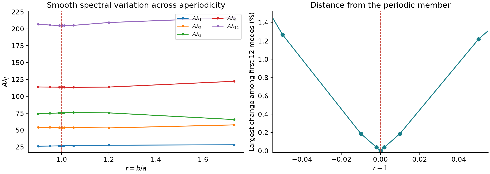

What these notes collect. Explicit eigenfunctions and even a small regular part of the spectrum are useful observations in their own right. We follow connections as they appear, rather than organize the notebook around resolving an aperiodicity test. Exact constructions, numerical evidence and open possibilities are labeled separately.
Progress notebook
Explicit square and equilateral-triangle functions, with boundary conditions induced by their reflection parity.
Sphinx, Socolar–Taylor, pinwheel, Penrose and Ammann–Beenker geometries join the spectrum viewer.
Computed modes remain available, with identified family matches optionally removed from the display.
The latest experiment counts modes between consecutive distinct members of the known L-triomino ladder. The first counts are \(4,4,3,3,8,0,2,8,2,4,6\). These are refinement-stable numerical estimates, not certified continuum counts. Two later intervals remain unresolved because another mode lies very close to the endpoint \(34\pi^2\).
“Arithmetic” here refers to a specified normalization. A level \(q\pi^2\) with nonzero rational \(q\) is itself transcendental; the normalized number \(\lambda/\pi^2=q\) is algebraic. We have not proved that the eigenvalues outside the constructed family have non-algebraic normalized values. Consequently we count intervening modes outside the known ladder, rather than call them non-algebraic.
The expanded atlas now contains \(2010\) computed fields on \(10\) geometries. Six new polygons have \(60\) Dirichlet and \(60\) Neumann modes each. The exact catalogue adds Sphinx and regular-hexagon families; every listed exact function has an edge-by-edge boundary certificate. Boundary audit · Known nonperiodic examples.
Notebook history and current gaps
The initial literature survey and the Chair44 comparison remain below. The arithmetic revision added exact subsets and L-triomino gap counts. The viewer first added three L-triomino boundary problems. The short/long revision added mixed Hat and Turtle spectra. The current revision starts from elementary square and triangle eigenfunctions, derives the fitting tile boundary conditions, and separates their exact catalogue from the numerical remainder. The boundary audit now checks affine mirrors edge by edge, and six more geometries broaden the known nonperiodic examples. The L-triomino remains a periodic control. Gap counts between the Hat–Turtle ladders remain open. No spectrum of the geometric Chair44, curved Spectre, or a Chair44-specific boundary-condition model is computed here.
- Spectral objects and tiling rules
- Exact arithmetic subsets
- Counts and interactive spectrum explorer
- Markings as boundary constraints
- Fourier spectra and translations
- Drums and heat traces
- Geodesics and billiards
- Numerical family profiles
- The L-triomino and Chair44
- Spectra of completed tilings
1. Spectral objects, tiles and placement rules
A geometric tile is a bounded planar domain \(\Omega\) with a specified group \(G\) of allowed isometries. A tiling covers the plane with copies \(g_i\Omega\), with disjoint interiors. For measurable translational tilings, coverage and disjointness are understood almost everywhere. For marked tiles, matching rules are additional data.
A tiling \(\mathcal T\) has a translational period if \(\mathcal T+v=\mathcal T\) for a nonzero vector \(v\). A fully periodic tiling has two independent periods. In these notes, a strongly aperiodic tiling has no nonzero translational period. A forced-aperiodic tile admits at least one tiling and every admitted tiling is strongly aperiodic. Merely constructing one nonperiodic arrangement does not establish this universal claim. Both the allowed group and the matching rules must be fixed.
| Data | What is measured? | Relationship to forced aperiodicity |
|---|---|---|
| Laplacian spectrum | Eigenvalues of an operator on the isolated tile, with chosen boundary conditions. | Geometric information and necessary inequalities; no general test established here. |
| Billiard length spectrum | Lengths of closed reflecting trajectories; marked versions retain trajectory labels. | Reflection geometry, with inverse results depending strongly on retained labels. |
| Bounce spectrum | The complete language of labeled boundary encounters. | Recovers non-right-angled polygons up to similarity; hence can determine geometric properties indirectly. |
| Fourier spectral set | An orthogonal basis of plane waves on the tile. | Equivalent to translational tileability for convex bodies; lattice cases certify a periodic option. |
| Diffraction spectrum | Fourier transform of the autocorrelation of a chosen decorated point pattern. | Detects long-range correlations of that pattern, with information loss. |
| Dynamical spectrum | Translation action on the space of legal tilings. | Can test periods if suitable eigenfunctions separate configurations. |
The first four start with a tile; the last two normally require a tiling or a tiling space. Confusing these levels would turn a statement about a known arrangement into an unsupported claim about every possible arrangement.
2. Elementary cells first: exact arithmetic subsets
Choose a known function, then read off its boundary conditions
The starting objects are eigenfunctions on a small square or equilateral triangle. Extend them across straight reflection lines: an odd extension has zero trace and gives Dirichlet conditions; an even extension has zero normal derivative and gives Neumann conditions. Restrict the extended function to the tile, and check every boundary segment. When these checks hold, its eigenvalue is known exactly before any tile eigensolve.
What has actually been checked at the boundary?
Exact functions. Each family fixes one boundary assignment shared by all its functions. For every open boundary segment, the audit verifies its affine mirror, the translation phase, and the function’s reflection sign. If the line reflection is \(\rho(x)=wx+t\), then
\[ u(\rho x)=\sigma u(x),\qquad \sigma=-1\Rightarrow u|_e=0,\qquad \sigma=+1\Rightarrow\partial_\nu u|_e=0. \]Odd symmetry forces zero trace on the fixed line. Differentiating even symmetry reverses the normal and forces zero normal derivative. Integer translation phases are checked for the triangle-orbit sums; integer coordinate lines are checked for the square products. Frequency covariance and the character law are exact integer calculations. Sample traces and fluxes provide additional floating-point diagnostics. The original boundary certificates and new certificates retain every checked edge. At polygon vertices, the boundary condition is understood in the weak trace formulation.
Numerical functions. The conforming finite-element space has zero nodal values on Dirichlet segments. Piecewise-linear interpolation therefore has exactly zero trace there, including Dirichlet–Neumann junction nodes. Neumann conditions enter naturally through the weak equation
\[ \int_\Omega\nabla u_h\cdot\nabla v_h\,dx=\lambda_h\int_\Omega u_hv_h\,dx,\qquad v_h|_{\Gamma_D}=0. \]The absence of a Neumann boundary load represents homogeneous zero flux. The computed matrix residual checks this discrete equation. It does not establish that the normal derivative of the plotted piecewise-linear function vanishes pointwise on each boundary segment. That stronger pointwise identity holds for the explicit reflection functions. Refinement movements are recorded, without certified continuum error bounds.
On the unit square, separated sine and cosine factors give the grid families below. On an equilateral triangle of side \(a\), the full homogeneous spectra have levels
\[ \lambda_{r,s}=\frac{16\pi^2}{9a^2}(r^2+rs+s^2),\qquad r,s\ge1\text{ for Dirichlet},\quad r,s\ge0\text{ for Neumann}, \]with their proper multiplicities. Real eigenfunctions come from finite reflection sums of plane waves. Odd or even symmetry across a median supplies another Dirichlet or Neumann line on restriction to half a triangle. [25, Appendix A] To fit every Hat or Turtle edge in the construction used here, we retain the lattice-periodic sectors with simultaneous scalar parity on all three medians. This is a compatible subset of the triangle modes, not the whole triangular spectrum.
| Unit triangle sides | All median reflections | Induced short / long tile condition | First constructed tile level |
|---|---|---|---|
| Dirichlet | Even | Dirichlet / Neumann | \(16\pi^2/3\) |
| Neumann | Odd | Neumann / Dirichlet | \(16\pi^2\) |
| Dirichlet | Odd | Dirichlet / Dirichlet | \(112\pi^2/3\) |
| Neumann | Even | Neumann / Neumann | \(0\); first nonconstant \(16\pi^2/3\) |
The side and median families become the tile’s short and long edge families, respectively. The triangle for Turtle is rotated by \(\pi/6\). Selecting a function fixes its induced boundary problem; the boundary conditions are not fitted separately to each numerical eigenvector. The four rows are deductions from the explicit parity construction. The unit triangle’s first nonconstant Neumann level \(16\pi^2/9\), for example, is outside this particular lattice-periodic catalogue.
Nodes use the exact eigenvalues, with proportional horizontal spacing. Repeated nodes at a level represent independent functions in the chosen family.
The catalogue reaches \(m^2+n^2\le37\) on the square and \(Q\le80\) in the triangular lattice. Formula evaluation supplies these pictures; they are not FEM eigenfunctions. Every source-cell boundary, triangle median parity and induced tile boundary is checked in the original verification receipt and additional verification receipt. Exact frequencies and coefficients are in the original catalogue and expanded catalogue.
Numerical computation of the other modes
After fixing the induced boundary problem, use FEM for the remaining spectral structure. A finite-element calculation still computes the full low spectrum: we compare its eigenvectors with the already known explicit subspaces, then optionally hide identified matches from the numerical display. Unresolved candidates stay visible. The unassigned numerical modes can include further exact families we have not found; they are not proved non-algebraic.
For a fixed tile and boundary problem, the closed span of the constructed eigenfunctions is an invariant spectral subspace. Its \(L^2\)-orthogonal complement is invariant too, so an exact separation is mathematically available. The present numerical workflow identifies subspace matches after the solve; it does not implement a rigorously deflated continuum operator. Numerical refinement and boundary singularities remain relevant for the complement. Inspect the computed modes.
Elementary eigenfunction constructions The following families are deductions from the displayed functions and boundary geometry. They are not claims that a whole spectrum is algebraic, or that these particular constructions are new. The accompanying script checks the lattice identities exactly and records the numerical experiments separately.
Integer-grid domains: an exact sine and cosine family
Let \(\Omega\) be a bounded connected union of unit cubes in \(\mathbb R^d\), so every boundary face lies in an integer coordinate hyperplane. For positive integers \(m_j\),
\[ u_m(x)=\prod_{j=1}^d\sin(\pi m_jx_j),\qquad -\Delta u_m=\pi^2\left(\sum_{j=1}^dm_j^2\right)u_m. \]Every face has an integer coordinate, so the trace vanishes there. The function is nonzero on the domain and gives an exact Dirichlet eigenfunction. The cosine product with \(m_j\ge0\) instead has zero normal derivative on every face and supplies a Neumann family, including the constant mode. This works for the bare L-triomino and the seven-cube chair, without requiring separation of variables on the entire nonconvex domain.
\[ \mathcal S_D^{\mathrm{grid}}=\left\{\pi^2\sum_{j=1}^dm_j^2:m_j\in\mathbb Z_{>0}\right\}\subseteq\operatorname{Spec}_D(\Omega). \]For the planar L-triomino, the distinct levels begin \(2\pi^2,5\pi^2,8\pi^2,10\pi^2,13\pi^2,17\pi^2,18\pi^2,\ldots\). Ordered pairs give independent constructed modes; for example \(5\pi^2\) has at least two, from \((m,n)=(1,2)\) and \((2,1)\). This is a lower bound on full multiplicity, not an assertion that extra modes can never coincide. The first constructed spatial-chair level is \(3\pi^2\); it is not claimed to be that domain’s first eigenvalue.
Hat and Turtle: finite reflection orbits of plane waves
Use the triangular lattice \(L\) generated by \((1,0)\) and \((1/2,\sqrt3/2)\). The natural Hat is \(\mathrm{Tile}(1,\sqrt3)\). All its vertices lie in \(L\), and each side lies on a reflection mirror of the dihedral group \(D_6\), translated through a lattice vertex. The natural Turtle is \(\mathrm{Tile}(\sqrt3,1)\); it has the same property in the lattice rotated by \(\pi/6\). These are the Hat and Turtle of the monotile paper. [13]
For a reciprocal-lattice vector \(k\in L^*\), take the finite orbit sums
\[ \Phi_k^-(x)=\sum_{w\in D_6}\det(w)e^{2\pi i(wk)\cdot x},\qquad \Phi_k^+(x)=\sum_{w\in D_6}e^{2\pi i(wk)\cdot x}. \]They are lattice-periodic. The first is odd and the second even across each relevant affine mirror: reflection about a line through \(p\in L\) is \(x\mapsto wx+(I-w)p\), and the last term belongs to \(L\). Thus \(\Phi_k^-\) vanishes on every side, while \(\Phi_k^+\) has zero normal derivative there. Both satisfy the Helmholtz equation with eigenvalue \(4\pi^2|k|^2\).
Writing \(k=(m,(2n-m)/\sqrt3)\) gives the integral positive quadratic form
\[ Q(m,n)=m^2-mn+n^2,\qquad \lambda=\frac{16\pi^2}{3}Q(m,n). \]For Dirichlet conditions retain regular orbits with twelve distinct vectors; otherwise the alternating sum vanishes. Distinct regular orbits supply independent eigenfunctions, even when they share a norm. The first admissible shell values are \(7,13,19,21,28,31,37,39,\ldots\). The symmetric sum supplies Neumann modes also on singular orbits. Rotation leaves the norm unchanged, so the natural Hat and Turtle share this infinite exact eigenvalue subset, despite having different full spectra and different areas.
Proof checks. The receipt verifies the integer group relations, preservation of the lattice metric and reciprocal quadratic form, and every boundary mirror for both polygons. Nonzero finite sums with distinct frequencies cannot vanish identically on an open domain. Their smooth restrictions satisfy the weak Dirichlet or Neumann eigenproblem, including at the nonconvex corners. These facts justify the inclusion; they do not exhaust either spectrum.

How small is this part of the spectrum?
Count constructed independent modes, including their multiplicities, by \(M_\Omega(E)\). Weyl’s law counts all modes by \(N_\Omega(E)\). For a union of \(v\) unit cubes, the constructed sine modes are the unit-cube modes restricted to the larger domain, so
\[ \frac{M_\Omega(E)}{N_\Omega(E)}\longrightarrow\frac1v. \]This gives \(1/3\) for the planar L-triomino and \(1/7\) for the bare spatial chair. For the triangular-lattice construction, lattice-point counting followed by division into regular orbits gives
\[ M_\Omega(E)\sim\frac{\operatorname{covol}(L)}{48\pi}E, \qquad \frac{M_\Omega(E)}{N_\Omega(E)}\longrightarrow\frac{\operatorname{covol}(L)}{12|\Omega|}. \]Here \(\operatorname{covol}(L)=\sqrt3/2\), while the natural Hat and Turtle have areas \(8\sqrt3\) and \(10\sqrt3\). The fractions are therefore \(1/192\) and \(1/240\). Singular orbits affect lower-order counts. These ratios concern the dimensions of the constructed mode spaces, not the fraction of distinct eigenvalue values; they make no assertion about algebraicity of the remaining modes.
The arithmetic comes from a reflection lattice. It appears in periodic and aperiodic tilers alike. Abstract Robin markings, mixed boundary assignments, and physical bumps or dents need separate checks: they need not preserve these particular eigenfunctions.
A small low-mode atlas
The lowest modes generally lie outside the explicit ladders. The following area-normalized Dirichlet estimates provide a separate description. The equilateral polygon is included as a geometric control; it has periodic tilings with reflections allowed and forces aperiodicity when they are forbidden.
| Domain | First four estimates of \(A\lambda_j\) | Last-refinement change, first twelve modes |
|---|---|---|
| L-triomino | \(28.92667,\;45.59425,\;59.22204,\;88.57399\) | \(0.090\%\) |
| Hat | \(28.19002,\;57.63163,\;65.42618,\;84.98970\) | \(0.356\%\) |
| Turtle | \(25.21507,\;49.13093,\;74.61650,\;80.27621\) | \(0.298\%\) |
| Equilateral polygon | \(26.65540,\;53.86393,\;75.53570,\;85.44419\) | \(0.404\%\) |
The atlas uses conforming finite elements and has no certified continuum error bounds. Natural Turtle coordinates are computed independently: the existing common deformation mesh in the original experiment inverts at its ratio, so that mesh is not reused.
More tiles with known nonperiodic tilings
These examples broaden the constructions being compared. A spectrum below belongs to the specified bare polygon and boundary operator. A substitution or matching rule that selects nonperiodic tilings is retained alongside it as separate data. Bare triangles, rhombi and regular hexagons also have periodic tilings; their nonperiodic arrangements remain valuable comparisons.
| Example and geometry | Known nonperiodic construction | What the present operator measures |
|---|---|---|
| Sphinx: six unit equilateral triangles | Hierarchical substitution tilings; a marked system can enforce the substitution. [26] [27] | Bare Sphinx, with all Dirichlet or all Neumann. The bare shape is not claimed to force aperiodicity. |
| Socolar–Taylor: unit regular hexagon | Decorations with nearest- and next-nearest-neighbor matching rules force aperiodicity. [28] | The underlying hexagon. Neither its decorations nor the geometrically modified realization are encoded. |
| Pinwheel: right triangle with legs \(1,2\) | Radin’s substitution gives nonperiodic tilings with infinitely many orientations. [29] | Bare triangle; a half-turn pair forms a periodically repeating parallelogram. |
| Penrose: unit thick and thin rhombi, angles \(2\pi/5,\pi/5\) | The marked pair enforces aperiodic Penrose tilings. [12] | Both bare rhombi separately. Arrows and pairwise transmission conditions remain to be modeled. |
| Ammann–Beenker: unit square and rhombus of angle \(\pi/4\) | Beenker’s tetragrid construction gives nonperiodic tilings. His simple arrow constraints allow additional tilings and do not alone force nonperiodicity. [30, introduction] | The bare rhombus; the square already supplies the elementary square reference. No joining rules are encoded. |
All six new polygons have \(60\) modes for each homogeneous boundary problem, with separate operator rows on the real line and a numerical field for every node. The table gives unscaled Dirichlet estimates and the largest relative last-refinement movement among the first twelve entries of either operator, excluding the Neumann constant.
| Polygon | First three Dirichlet estimates \(\lambda_j\) | Largest low-mode movement | Fine mesh nodes |
|---|---|---|---|
| Sphinx | \(11.742371,\;17.997980,\;26.994214\) | \(0.488\%\) | \(12741\) |
| Socolar–Taylor hexagon (bare geometry) | \(7.156328,\;18.138041,\;18.138248\) | \(0.413\%\) | \(12273\) |
| Pinwheel triangle | \(27.764827,\;49.902168,\;74.713053\) | \(0.488\%\) | \(12765\) |
| Penrose thick rhombus | \(21.399504,\;48.615769,\;58.362455\) | \(0.461\%\) | \(12313\) |
| Penrose thin rhombus | \(47.381583,\;84.112759,\;122.197230\) | \(0.512\%\) | \(12693\) |
| Ammann–Beenker rhombus | \(34.755650,\;66.300584,\;100.304268\) | \(0.465\%\) | \(12393\) |
Sphinx and hexagon exact subsets. Their sides follow the unit triangle’s side-mirror family. Consequently the Dirichlet-side, even-median triangle family gives all-Dirichlet conditions on these entire tile boundaries; the all-even family gives all-Neumann conditions. A long merged Sphinx side remains on the same mirror line. Both catalogues have first nonconstant constructed level \(16\pi^2/3\), and then a common ladder selected by \(Q=m^2-mn+n^2\). The unit regular hexagon and Sphinx both have area \(3\sqrt3/2\), but different low spectra. Each construction is a subset, with no claim of complete multiplicity. Numerical projection identifies the first two shells, \(Q=1,4\), within the present cutoff. Geometry and exact orbits · Numerical receipt.
A finite-plane-wave obstruction for the pinwheel. Let \(\alpha=\arctan(1/2)\). Then \(\cos(2\alpha)=3/5\). If \(2\alpha\) were a rational multiple of \(\pi\), the rational number \(2\cos(2\alpha)=6/5\) would be an algebraic integer, which is impossible. Two side reflections therefore generate an infinite-order rotation. A nonzero finite set of nonzero wave vectors cannot be invariant under that rotation. A finite plane-wave Helmholtz sum satisfying either homogeneous Dirichlet or homogeneous Neumann conditions on each open side must have the corresponding reflection parity, so its frequency support would have to be invariant. Thus no nonconstant finite-plane-wave sum fits all pinwheel sides, for any fixed Dirichlet–Neumann assignment. The Neumann constant survives. This deduction excludes that construction method; it does not classify the eigenvalues’ algebraicity.
The Penrose templates. Adjacent rhombus mirrors generate a rotation of order \(5\). Every nonzero frequency orbit has size \(5\). A single nonconstant square-product template has \(2\) or \(4\) frequencies, and a single triangle template in this catalogue has \(6\) or \(12\); none has a support size divisible by \(5\). Hence none of those individual templates can have a fixed Dirichlet or Neumann parity on both adjacent sides. Larger frequency constructions, translated phases and other number fields remain questions to explore. For the Penrose, pinwheel and Ammann–Beenker shapes, the current exact viewer records only the universal Neumann constant; their other modes are numerical and unclassified.
3. Counting between known levels
Numerical spectrum on the real line
Each node is one computed mode, including multiplicity. Its horizontal position is proportional to its eigenvalue; close modes are stacked vertically to keep them selectable. The boundary problems have separate rows sharing one horizontal scale. Click a node to inspect its value and computed eigenfunction, or use the mode selector to distinguish near-coincident modes. The gold outline identifies a numerical match to a known constructed subspace. The initial view shows the lowest modes; Full range displays all computed modes.
Solid gold ring: identified analytic-subspace match. Dashed gold: unresolved candidate. All positions show numerical estimates.
The initial filter hides recorded numerical family matches and the known Neumann constant. Unknown modes and unresolved candidates remain. Choose All computed modes to restore the complete computed lists. Original mode ranks are retained; this filter is not a certified decomposition into the full exact and non-exact spectra.
The field is the piecewise-linear interpolation of the computed FEM eigenvector, scaled by its largest absolute nodal value. The sign is arbitrary; a numerical basis can rotate inside a multiple eigenspace. Last-refinement movements and matrix residuals are diagnostics, not continuum error bounds. Neumann conditions are imposed naturally in the weak formulation. Hat and Turtle each have \(240\) modes for each mixed assignment and \(12\) each for the Dirichlet and Neumann controls. L-triomino has \(90\) per boundary problem; the equilateral polygon has \(12\) Dirichlet modes. Each of the six new polygons has \(60\) Dirichlet and \(60\) Neumann modes. Different truncation limits are explicit, so a row ending early does not mean its spectrum ends.
Hat and Turtle: short and long edges carry different conditions
The natural Hat and Turtle have primitive edge lengths \(1\) and \(\sqrt3\). The split follows the two underlying edge families. We retain \(14\) primitive segments, including the straight vertex normally suppressed in the \(13\)-sided polygon: a straight run of two short segments is still a short-family boundary, even though its combined length is \(2\). The Hat has \(8\) short and \(6\) long primitive edges; the Turtle has \(6\) short and \(8\) long ones. This distinction agrees with the two line families used in the monotile paper. [13]
Both complementary mixed problems are now included: Dirichlet on short edges with Neumann on long edges, and Neumann on short edges with Dirichlet on long edges. The finite-element junction nodes adjoining Dirichlet segments are constrained. Their numerical ground states and diagnostics appear below; the viewer includes both assignments for Hat and Turtle alongside the new examples and periodic controls.
| Domain / mixed assignment | Ground-state estimate \(\nu_1\) | Last refinement movement | First exact-family match |
|---|---|---|---|
| Hat — Short D / long N | \(0.77280576\) | \(1.968\times10^{-02}\) | Mode \(59\); projection \(0.9678\) |
| Hat — Short N / long D | \(1.18923720\) | \(1.476\times10^{-02}\) | Pending; candidate modes \(171,\;170\); largest projection \(0.6234\) |
| Turtle — Short D / long N | \(0.33816514\) | \(4.444\times10^{-03}\) | Mode \(76\); projection \(0.9998\) |
| Turtle — Short N / long D | \(1.31014200\) | \(4.910\times10^{-03}\) | Mode \(208\); projection \(0.9892\) |
Hat uses \(4\) nested refinements and Turtle uses \(3\). Each mixed list contains \(240\) modes. Three first-level subspace matches pass the \(.95\) projection threshold; Hat with short Neumann and long Dirichlet remains unresolved because its projection is spread across nearby modes. These are numerical identifications, without certified continuum error bounds. All candidates, projection scores and preceding-mesh checks are retained.
Exact character construction In each tile’s own triangular lattice, let \(R\) rotate by \(\pi/3\) and let \(S\) reflect across the first lattice axis. The short-edge mirrors are \(R^{2j}S\), and the long-edge mirrors are \(R^{2j+1}S\). The two mixed assignments correspond to the one-dimensional characters
\[ \chi(R)=-1,\qquad \chi(S)=\begin{cases}-1,&D\text{ on short},\ N\text{ on long},\\+1,&N\text{ on short},\ D\text{ on long}.\end{cases} \]For reciprocal lattice frequencies define the real orbit sum
\[ \Psi_k^{\chi}(x)=\operatorname{Im}\sum_{w\in D_6}\chi(w)e^{2\pi i(wk)\cdot x},\qquad -\Delta\Psi_k^{\chi}=\frac{16\pi^2}{3}Q(m,n)\Psi_k^{\chi}. \]These mixed sums are odd under inversion, so the sine part is the nonzero real candidate; the cosine part vanishes. A nonzero sum is odd across a Dirichlet mirror and even across a Neumann mirror. The affine translations in the boundary mirrors belong to the lattice and leave the function periodic. A frequency orbit survives precisely when its stabilizer has character \(+1\); regular orbits always survive. This produces exact arithmetic subsets for both Hat and Turtle.
| Short / long condition | Character on \(S\) | First admissible \(Q\) | First constructed level |
|---|---|---|---|
| Dirichlet / Neumann | \(-1\) | \(1\) | \(16\pi^2/3\) |
| Neumann / Dirichlet | \(+1\) | \(3\) | \(16\pi^2\) |
Those levels belong to the exact subsets; neither is asserted to be a ground state. The character and orbit receipt checks the group law, edge classes and surviving shells exactly, and checks sample traces, fluxes and transported gradients numerically. Numerical node identification uses mass-inner-product projection onto the explicit orbit space, rather than rounding a value to the expected level.
Coherent gluing. Suppose copies are placed by \(g_i(y)=w_i y+t_i\), with \(w_i\in D_6\) and \(t_i\in L\), in the specified lattice coordinates. The character gives a consistent tile phase:
\[ u_i(x)=\chi(w_i)\Psi_k^{\chi}\!\left(w_i^{-1}(x-t_i)\right)=\Psi_k^{\chi}(x). \]Thus the constructed restrictions share the same smooth plane function, with equal traces and opposite outward fluxes on a shared seam. The character law makes phases agree around loops. This proves compatibility for placements satisfying the displayed group condition; the present calculation does not reconstruct a full tiling or verify an arbitrary list of placements. Alignment is treated in the monotile paper’s Appendix A. [13]
The two mixed choices are especially natural for the two edge families. Together with the trivial character (all Neumann) and determinant character (all Dirichlet), they complete the four real one-dimensional characters of \(D_6\). A boundary condition remains part of the operator specification. A periodic eigenfunction can coexist with an aperiodic arrangement of tile boundaries; this arithmetic subset therefore describes gluing compatibility without deciding whether the arrangement is periodic.
A mixed subset that glues on a known tiling
The mixed L-triomino control uses Dirichlet on every vertical edge and Neumann on every horizontal edge. For \(m\ge1\) and \(n\ge0\), its explicitly constructed eigenfunctions are
\[ u_{m,n}(x,y)=\sin(m\pi x)\cos(n\pi y),\qquad \nu=\pi^2(m^2+n^2). \]The bare L-triomino tiles by integer translations in the lattice \(\Lambda=\{(a,b)\in\mathbb Z^2:a+2b\equiv0\pmod3\}\), generated by \((3,0)\) and \((1,1)\). Its three unit cells occupy the three distinct residue classes, proving coverage without overlap. On the copy translated by \(t=(a,b)\), set
\[ u_t(x,y)=(-1)^{ma+nb}u_{m,n}(x-a,y-b)=u_{m,n}(x,y). \]These restrictions therefore glue to one smooth plane eigenfunction. Traces agree and the outward normal derivatives sum to zero at every interface. The global function is a generalized plane eigenfunction, not a square-integrable eigenfunction on the whole plane. This construction proves gluing for the displayed subset; a generic mixed eigenfunction need not admit coherent gluing by scalar signs. The mixed ground-state estimate is below the first constructed level \(\pi^2\), so even its lowest mode is outside this particular family.
Comparing boundary spectra. A labeled overlay is meaningful, as is comparing counting functions or interlacing. An unlabeled union changes the object: with multiplicities it is the spectrum of the direct sum \(L_D\oplus L_N\oplus L_{DN}\), representing independent copies of the operator. It is not the spectrum of a glued tiling. For matched ordered indices, including the Neumann constant as the first entry, the variational principle gives \(\mu_{j-1}\le\nu_j\le\lambda_j\), for \(j\ge1\). The computed lists satisfy this inequality.
A marked tiling would require its actual permitted edge pairings and transmission maps. Those maps couple boundary values and fluxes of neighboring copies; homogeneous Dirichlet–Neumann assignments alone do not encode the Chair44 matching rules. We can retain a family of boundary operators and its gluing compatibility alongside the isolated spectra. See boundary constraints below.
Counting the Dirichlet gaps
Let \(a_1<a_2<\cdots\) be the distinct values of a specified exact ladder. The count of interest is
\[ G_j=\#\{k:a_j<\lambda_k<a_{j+1}\}, \]with multiplicity. Endpoint eigenspaces are excluded. Equivalently, if \(N_{<}(E)=\#\{k:\lambda_k<E\}\) and \(N_{\le}(E)=\#\{k:\lambda_k\le E\}\), then \(G_j=N_{<}(a_{j+1})-N_{\le}(a_j)\). This definition makes no classification of the intervening numbers as algebraic or transcendental. A complete classification of all algebraic normalized eigenvalues would be a substantially stronger result.
L-triomino experiment We compute the first ninety Dirichlet modes on four nested meshes. Endpoint modes are identified by their mass-inner-product projections onto the explicit sine-product eigenspaces, rather than by rounding an eigenvalue to an integer. Close numerical values alone can misidentify a mode. We track ranks and counts, treat the known constructed multiplicities as lower bounds, and retain the projection scores in the receipt.
| Interval, divided by \(\pi^2\) | Intervening modes | Counts on four meshes | Evidence |
|---|---|---|---|
| \((2,5)\) | \(4\) | \(4,\;4,\;4,\;4\) | refinement-stable estimate |
| \((5,8)\) | \(4\) | \(4,\;4,\;4,\;4\) | refinement-stable estimate |
| \((8,10)\) | \(3\) | \(3,\;3,\;3,\;3\) | refinement-stable estimate |
| \((10,13)\) | \(3\) | \(3,\;3,\;3,\;3\) | refinement-stable estimate |
| \((13,17)\) | \(8\) | \(8,\;8,\;8,\;8\) | refinement-stable estimate |
| \((17,18)\) | \(0\) | \(0,\;0,\;0,\;0\) | refinement-stable estimate |
| \((18,20)\) | \(2\) | \(2,\;2,\;2,\;2\) | refinement-stable estimate |
| \((20,25)\) | \(8\) | \(8,\;8,\;8,\;8\) | refinement-stable estimate |
| \((25,26)\) | \(2\) | \(2,\;2,\;2,\;2\) | refinement-stable estimate |
| \((26,29)\) | \(4\) | \(4,\;4,\;4,\;4\) | refinement-stable estimate |
| \((29,32)\) | \(6\) | \(6,\;6,\;6,\;6\) | refinement-stable estimate |
| \((32,34)\) | Pending | \(1,\;1,\;1,\;1\) | pending endpoint resolution |
| \((34,37)\) | Pending | \(5,\;5,\;5,\;5\) | pending endpoint resolution |
The finest gap-count mesh has \(74753\) nodes and \(148480\) triangles. Each mesh supplies \(90\) modes, including multiplicities. The smallest selected analytic-subspace projection score on the finest mesh is \(0.9676\); a score of \(1\) would mean complete agreement with the interpolated explicit subspace. The four counts in each row run from the coarsest to the finest mesh. All estimates, ranks, projection scores and refinement movements are retained.
“Refinement-stable” means that the identified endpoint ranks agree on the two finest meshes, the intervening estimates lie strictly inside the interval, and their distances from endpoints exceed their last-refinement changes. That last check is a heuristic, not an error enclosure. Unknown extra endpoint multiplicity, or an eigenvalue closer to an endpoint than the current resolution, could still change the continuum count. Rigorous lower and upper eigenvalue enclosures are needed to certify it.
The last two intervals are deliberately left pending: the rank-based candidates are one mode between \(32\pi^2\) and \(34\pi^2\), and five between \(34\pi^2\) and \(37\pi^2\), but modes close to \(34\pi^2\) can cross that threshold under refinement. The explorer displays those estimates and their movements rather than silently assigning them.
The counts collected so far vary substantially. They do not presently suggest a constant number of intervening modes. A useful further description might retain symmetry classes, arithmetic shell multiplicities, or spectral counting remainders. The common Hat–Turtle ladder provides another comparison, but its first level \(112\pi^2/3\) is far above the twelve-mode atlas; its gap counts are still open in this notebook.
4. Markings as constraints on boundary data
Yes: we can make a marking affect the operator by assigning homogeneous boundary constraints. The spectral object then includes both the geometry and that assignment, \((\Omega,B_m)\). A simple scalar model on a bounded Lipschitz tile is real, bounded Robin data:
\[ -\Delta u=\lambda u,\qquad \partial_\nu u+\beta_m(x)u=0\quad\text{on }\partial\Omega. \]Mixed Dirichlet–Neumann partitions and Hermitian matrix-valued Robin data are other possibilities. The associated quadratic form must define a self-adjoint operator. General boundary extensions have an established operator-theoretic framework. [22] A fixed inhomogeneous prescription such as \(u=m\) is instead a forced boundary problem: its admissible set is affine and is not the usual linear domain for an eigenvalue problem.
Robin coefficients have inverse-length units. Under dilation, the scale-compatible assignment is \(\beta_{s\Omega}(sx)=s^{-1}\beta_\Omega(x)\). Without that convention, multiplying by area does not remove all scale dependence. An arbitrary dictionary from colors to Robin numbers is a declared model; it does not automatically recover the original matching rules.
Matching two tiles is an interface condition
For a legal face identification, after transporting boundary coordinates and channels by \(U\), transparent attachment uses continuity and cancellation of outward flux:
\[ u_i=Uu_j,\qquad \partial_{\nu_i}u_i=-U\partial_{\nu_j}u_j. \]These replace the isolated face conditions. Imposing unrelated Robin conditions in addition can overconstrain the field. The marking table specifies which joins are legal; equality of one solution’s boundary values alone cannot do this, because a zero trace can conceal an incompatible join. Physical dents and bumps provide another realization, with geometric boundary conditions on the changed domain.
Boundary response keeps more than a list of eigenvalues
For \(z\) away from the Dirichlet spectrum, solve \((-\Delta-z)u=0\) with trace \(f\), and retain the Dirichlet-to-Neumann map
\[ \Lambda_\Omega(z)f=\partial_\nu u. \]The pair \((\Lambda_\Omega(z),B_m)\) records both response and the chosen marking operator. Robin eigenvalues away from Dirichlet poles satisfy \(\ker(\Lambda_\Omega(z)+B_m)\ne\{0\}\). The unmodified response map itself cannot see abstract labels. Its Helmholtz version and its relation to the boundary Laplacian are studied by Girouard, Karpukhin, Levitin and Polterovich. [24]
Even scalar spectra with mixed boundary conditions can coincide for different boundary assignments on the same shape: Jakobson and collaborators give a nontrivial half-disk example. [23] This makes boundary-resolved eigenfunctions and response operators natural things to retain. We have not yet selected a faithful operator encoding for Chair44’s actual marking, or computed its spectrum. That model choice is part of the exploration.
5. Fourier spectra and translational tilings
A measurable domain is Fourier spectral if some countable frequency set \(\Lambda\) makes the normalized exponentials an orthonormal basis:
\[ e_\lambda(x)=|\Omega|^{-1/2}\exp(2\pi i\lambda\cdot x),\qquad \lambda\in\Lambda. \]These are not generally Dirichlet or Neumann eigenfunctions on \(\Omega\). Their orthogonality means
\[ \widehat{\mathbf 1_\Omega}(\lambda-\mu)=0\quad(\lambda\ne\mu), \]together with a completeness condition. Fuglede's conjecture linked this property to tiling by translations. For convex planar domains it is a theorem: spectrality is equivalent to translational tiling, and the tiles are parallelograms and centrally symmetric hexagons. Iosevich–Katz–Tao proved the planar result; Lev–Matolcsi later proved the convex-body equivalence in every dimension. [1] [2]
The lattice case has a transparent mechanism
Let \(L\) be a full-rank lattice and \(L^*\) its reciprocal lattice. Periodize the indicator:
\[ P_L(x)=\sum_{\ell\in L}\mathbf 1_\Omega(x-\ell),\qquad L^*=\{k:k\cdot\ell\in\mathbb Z\text{ for every }\ell\in L\}. \]Its Fourier coefficients are \(\widehat{\mathbf 1_\Omega}(k)/\operatorname{covol}(L)\). Therefore the exact conditions
\[ |\Omega|=\operatorname{covol}(L),\qquad \widehat{\mathbf 1_\Omega}(k)=0\quad(k\in L^*\setminus\{0\}) \]are equivalent to \(P_L=1\) almost everywhere. They certify a lattice tiling and thus exclude forced aperiodicity for any allowed-placement model containing those translations. Testing finitely many Fourier zeros numerically does not certify this infinite set of conditions. A Fourier basis indexed by a reciprocal lattice supplies a periodic option; an arbitrary nonlattice Fourier spectrum does not automatically do so.
Every triangle can tile using appropriate congruent copies: a triangle and its half-turn make a parallelogram, which repeats. Yet a convex triangle is not Fourier spectral, by the planar classification. Thus “not Fourier spectral” does not imply “cannot tile” when rotations are permitted. [1]
Current literature status. The unrestricted Fuglede equivalence fails in higher dimensions. A July 2026 preprint by Tao Zhang claims counterexamples to both directions already in the plane. I checked its statement and constructions at the source but have not independently validated its proof; these notes do not rely on that claim. The established convex theorem and the lattice argument remain the relevant safe conclusions. [3] [4]
6. Drum spectra, heat traces and tiling inequalities
For the Dirichlet drum, solve \(-\Delta u=\lambda u\) in \(\Omega\) with \(u|_{\partial\Omega}=0\); list eigenvalues \(0<\lambda_1\le\lambda_2\le\cdots\), including multiplicities. For Neumann conditions, \(\partial_\nu u=0\), the connected-domain spectrum begins \(0=\mu_0<\mu_1\le\cdots\). Scaling by \(s\) multiplies either spectrum by \(s^{-2}\); reflection and rotation leave it unchanged.
For a straight-sided polygon with interior angles \(\theta_i\), area \(A\) and perimeter \(P\), the Dirichlet heat trace has the expansion
\[ H_D(t)=\sum_{j\ge1}e^{-t\lambda_j}=\frac{A}{4\pi t}-\frac{P}{8\sqrt{\pi t}}+C_\Omega+O(e^{-c/t}),\qquad C_\Omega=\sum_i\frac{\pi^2-\theta_i^2}{24\pi\theta_i}. \]Thus the spectrum determines these three geometric quantities. All further coefficients at algebraic orders vanish for such polygons; the full heat trace contains additional information beyond this expansion. In the class of triangles, area, perimeter and the reciprocal-angle sum determine the shape, giving a positive inverse spectral theorem. [5]
For general planar domains, shape recovery fails: Gordon–Webb–Wolpert constructed noncongruent domains with identical full Dirichlet spectra. That fact alone does not prove that tiling or aperiodicity differs within an isospectral pair. Such a conclusion would require a pair with separately established, different tiling properties. I did not locate a verified geometric pair with one member forcing aperiodicity and the other admitting periodic tilings. [6]
A genuine tiling-to-eigenvalues theorem
Define \(N_D(E)=\#\{j:\lambda_j<E\}\) and \(N_N(E)=\#\{j:\mu_j<E\}\), including the Neumann zero mode. For planar tiling domains with the regularity needed for the operators, Pólya's inequalities give
\[ N_D(E)\le\frac{AE}{4\pi},\qquad N_N(E)\ge\frac{AE}{4\pi}\quad(E>0). \]The mechanism is to fill a large region with copies of the tile and compare operators by boundary bracketing, then use Weyl asymptotics. Filonov supplies the general Neumann tiling result. The argument does not require that the chosen arrangement be periodic, so it cannot separate periodic tiles from forced-aperiodic ones. [7]
The converse fails even as a tileability test: the disk obeys both inequalities but cannot tile the plane by congruent copies. A certified violation could reject tileability under the theorem's hypotheses; satisfying the inequalities does not establish it. [8]
7. Geodesics, reflections and symbolic rigidity
A flat domain's ordinary interior geodesics are straight lines. There is no useful collection of nonconstant closed interior geodesics. One must specify reflecting billiards, a doubled surface, or a surface formed by a prescribed edge gluing. Those last two constructions include data that the isolated tile does not supply on its own.
In a rectangle of side lengths \(a,b\), unfolding reflections gives closed-orbit lengths of the form \(2\sqrt{m^2a^2+n^2b^2}\), with admissible integer pairs and repetitions treated explicitly. Its Dirichlet spectrum is \(\pi^2(m^2/a^2+n^2/b^2)\) for positive integers. This common lattice geometry explains the relation in a special case; it is not a universal tiling criterion.
Rational polygon billiards unfold to compact translation surfaces, usually with cone singularities. The unfolded copies can overlap when projected to the plane. Compact unfolding therefore does not prove a plane tiling. Rational polygons include examples with quite different tiling behavior; rationality alone does not detect forced aperiodicity. [9]
The wave trace \(\sum_j\cos(t\sqrt{\lambda_j})\), interpreted as a distribution, links eigenvalues to lengths of billiard trajectories. Corners introduce diffraction, and cancellations and degeneracies matter. One must not identify wave-trace singularities with a complete, labeled catalogue of all trajectories. Unmarked lengths discard which sides were encountered.
A positive answer with richer data. Duchin–Erlandsson–Leininger–Sadanand show that two simply connected Euclidean polygons with the same complete bounce spectrum are similar, except for the right-angled affine exception. The bounce spectrum records all bi-infinite sequences of side labels along nonsingular trajectories. For a non-right-angled polygon, it determines the shape up to similarity. With the placement rules fixed, the tiling and forced-aperiodicity properties are consequently determined as geometric properties of that recovered shape. This is an inference from their rigidity theorem, not a practical finite test or a theorem about unmarked lengths. [10]
This applies to the polygonal Hat–Turtle family because its angles are not all multiples of \(\pi/2\). It does not extend directly to curved-edge Spectres. Recovering a shape also does not, by itself, provide a terminating algorithm to decide every tiling problem about that shape.
8. Information lost by an isolated spectrum
Placement rules are invisible to an ordinary drum
The equilateral polygon \(\mathrm{Tile}(1,1)\) has periodic tilings if reflected copies are permitted. With reflections forbidden, its admitted tilings are all aperiodic. This is the weakly chiral monotile result. The physical domain and both its ordinary Dirichlet and Neumann spectra are identical in these two problems. Any detector using only those eigenvalues must give the same answer, even though the correct forced-aperiodicity answer changes. A detector must therefore accept the placement group as additional input. [11]
Matching rules are also invisible unless coupled to the operator
Adding arrows or colors to an unmodified tile boundary leaves a homogeneous drum unchanged. For example, the two Penrose rhombi with their matching rules force aperiodicity; without those rules each rhombus is a parallelogram admitting lattice tilings. The catalog of isolated shapes and its Laplacian spectra stay the same. This is an obstruction for decorated tile systems, not an isospectral counterexample between two different unmarked monotile shapes. [12]
Even with fixed rules, finite noisy spectra are unstable
Let \(\Omega_r=\mathrm{Tile}(1,r)\), with all planar isometries allowed. The established family result gives periodic tilings at \(r=1\), whereas every positive \(r\ne1\) forces aperiodicity. [13] The boundary coordinates vary continuously. In a neighborhood of \(r=1\), a fixed triangulation gives a piecewise affine, bi-Lipschitz map from \(\Omega_1\) to \(\Omega_r\), tending to the identity.
Deduction in these notes Pull back the energy and mass forms through this map. Their Jacobians converge uniformly on the finitely many triangles. The min–max characterization then gives, for every fixed index \(j\),
\[ \lambda_j(\Omega_r)\longrightarrow\lambda_j(\Omega_1),\qquad \mu_j(\Omega_r)\longrightarrow\mu_j(\Omega_1)\quad(r\to1). \]Area normalization preserves this convergence. Consequently, for any finite number \(K\) of modes and any positive measurement tolerance \(\varepsilon\), a forced-aperiodic member can satisfy
\[ \max_{1\le j\le K}\left|A_r\lambda_j(\Omega_r)-A_1\lambda_j(\Omega_1)\right|<\varepsilon. \]The same statement holds for a finite combination of Dirichlet and Neumann modes. Their measurement intervals can overlap those of a periodically tileable member. Thus there is no universally robust finite-noise classifier over this family. This does not rule out a classifier using exact finite data in a restricted parametric family, or a decision theorem from the full exact infinite spectrum. Near equality is not isospectrality.
9. Different tiling properties with matching heat invariants
Analytic deduction, not a full isospectral pair There is a stronger failure for the usual heat invariants. For this family the angles are fixed, and direct geometry gives
\[ A(r)=\sqrt3(2+\sqrt3r+r^2),\qquad P(r)=8+6r,\qquad C(r)=\frac{11}{36}. \]Choose a second ratio and scale it to the perimeter of the equilateral member:
\[ r_* =\frac{50\sqrt3-48}{22\sqrt3-27}\approx3.476103648,\qquad s_* =\frac{14}{8+6r_*}\approx0.485157273. \]The equation \(P(r)^2/A(r)=P(1)^2/A(1)\) has exactly the roots \(1\) and \(r_*\). Indeed, after clearing the denominator it factors as
\[ (108-88\sqrt3)(r-1)(r-r_*)=0. \]It follows that \(\Omega_1\) and \(s_*\Omega_{r_*}\) have exactly equal area, perimeter and corner heat constant. One admits periodic tilings; the other forces aperiodicity. Their entire algebraic small-time Dirichlet heat expansions agree, since a polygon has only the three nonzero coefficients displayed above. The exponentially small remainder and the full spectra need not agree.
This rules out forced-aperiodicity detection from those heat coefficients, even with exact measurements and a fixed group allowing all isometries. It illustrates why hearing corner complexity, or recovering a few global geometric invariants, is insufficient. The calculation is independently checked in the accompanying verification receipt.
10. Numerical profiles across a geometric family

The computation estimates the first twelve Dirichlet eigenvalues at ten parameter values. It uses conforming linear finite elements, a consistent mass matrix, a constrained quality triangulation, a common deformation of that mesh, and three nested refinements. The reported feature is \(A_r\lambda_j\), which removes overall scale. The same isolated tile, without an added potential or matching-rule boundary condition, is used throughout.

| Ratio | Known tiling property | Largest relative change in first twelve modes |
|---|---|---|
| \(0.9\) | forces aperiodicity | \(3.092\%\) |
| \(0.95\) | forces aperiodicity | \(1.271\%\) |
| \(0.99\) | forces aperiodicity | \(0.1871\%\) |
| \(0.998\) | forces aperiodicity | \(0.0375\%\) |
| \(1\) | admits periodic tilings | \(0\%\) |
| \(1.002\) | forces aperiodicity | \(0.03753\%\) |
| \(1.01\) | forces aperiodicity | \(0.188\%\) |
| \(1.05\) | forces aperiodicity | \(1.219\%\) |
| \(1.2\) | forces aperiodicity | \(4.045\%\) |
| \(1.73205\) | forces aperiodicity | \(13.11\%\) |
Each finest family mesh has \(17065\) nodes and \(33664\) triangles. The largest last-refinement change among the twelve modes is \(1.231\%\) over all cases, and \(0.409\%\) for \(0.95\le r\le1.05\). The finest square control differs from its exact first twelve modes by at most \(0.106\%\). The largest reported relative eigensolver residual is \(2.86\times10^{-11}\).
Refinement differences measure sensitivity to discretization; they are not rigorous error bounds. A tiny algebraic eigensolver residual is also not a bound on the continuum eigenvalue error. Common meshes help isolate the variation with the parameter, but do not eliminate discretization error. In particular, the small spectral differences near the equilateral member are numerical illustrations, while the analytic continuity argument establishes arbitrary closeness independently.
The experiment has no trained classifier and no inference of labels from a finite patch. It does not claim to discover a new monotile or to independently reprove the Hat-family aperiodicity theorem.
11. The L-triomino and Chair44: a controlled comparison
The planar L-triomino, its extrusion, and the three-dimensional seven-cube chair provide three distinct controls. Chair44 adds a fourth: the chair with a hierarchy-enforcing marking, realized geometrically by bumps and dents. This separates the shape, the matching rule, and its physical realization instead of treating them as one spectral object.
The bare chairs have exact periodic and Fourier certificates
For dimension \(d=2\) or \(d=3\), take the unit-cube cells
\[ B_d=\{0,1\}^d\setminus\{(1,\ldots,1)\},\qquad q_d=2^d-1,\qquad L_d=\left\{z\in\mathbb Z^d:\sum_{j=1}^d2^{j-1}z_j\equiv0\pmod{q_d}\right\}. \]The weighted binary sums of the cells in \(B_d\) are precisely \(0,\ldots,q_d-1\). Thus they give one representative of every coset of \(L_d\), and translating the chair by \(L_d\) covers each integer cube exactly once. This proves periodic tileability by translations alone. The planar L-triomino has area \(3\); the spatial chair has volume \(7\). Both are nonconvex Fourier spectral sets, with their reciprocal lattices as spectra. This follows from the exact lattice argument in the Fourier section; convexity is unnecessary in this special case.
The bare chair can also support hierarchical nonperiodic tilings. Its isolated drum spectrum is the same whichever arrangement is chosen. Chair44's decisive feature is that its matching rules require every legal tiling to follow a hierarchy. Goodman-Strauss explains the marked construction and its bump-and-dent realization. The spatial chair is a cube with one corner cube removed; it is not the extrusion of the planar L-triomino. [19]
Planar and extruded drum controls
For the unit L-triomino, direct geometry gives
\[ A=3,\qquad P=8,\qquad C=\frac{5}{16}-\frac{5}{144}=\frac{5}{18}. \]The corner calculation uses five angles of \(\pi/2\) and one reflex angle of \(3\pi/2\). Adding abstract arrows to this domain leaves these quantities and both homogeneous Laplacian spectra unchanged. A marking that is only a label needs to be supplied separately to a spectral test.
If \(E_h=\Omega_L\times(0,h)\) is the L-triomino prism, separation of variables gives the exact product identities
\[ \operatorname{Spec}_D(E_h)=\left\{\lambda_m(\Omega_L)+\frac{\pi^2n^2}{h^2}:m,n\ge1\right\},\qquad \operatorname{Spec}_N(E_h)=\left\{\mu_m(\Omega_L)+\frac{\pi^2n^2}{h^2}:m,n\ge0\right\}, \]with multiplicities retained. This is an analytically controlled three-dimensional benchmark, not a formula for the seven-cube chair. Repeating a planar periodic tiling and stacking the prisms gives a fully periodic spatial tiling. A planar nonperiodic arrangement stacked identically still has a vertical period, so extrusion alone does not force spatial aperiodicity.
The earlier twelve-mode L-triomino control estimates \(\lambda_1=9.64657652\) on a finest mesh of \(18817\) nodes and \(37120\) triangles. The largest last-refinement change among twelve modes is \(0.344\%\). These are conforming FEM estimates without certified continuum error bounds. The current gap experiment refines this planar control further. The prism estimates use the exact product identity with numerical planar inputs. The chair control receipt also records exact lattice and parameter checks; the control script reproduces them.
Physical markings change the spectrum, but can become arbitrarily shallow
Tsiokos's September 2026 preprint specifies a geometric Chair44 with 192 square-pyramid features, distributed among twelve balanced height groups. Its Appendix E.6 states sufficient open conditions for a twelve-parameter family with the same tiling conclusion. These notes check the parameter algebra; the full aperiodicity proof is not independently verified here. [20]
Deduction from the stated parameter theorem Keep the feature bases and centers fixed, and set the component coefficients to \(c_j=\delta j\) for \(j=1,\ldots,12\) and \(0<\delta\le1\). The height of group \(j\) is then \(\delta j/10000\). The only potentially nonmonotone angle exclusion becomes
\[ i^2-2j^2\ne\frac{\delta^2j^4}{10000}\qquad(1\le i,j\le12). \]A negative left side cannot equal the positive right side. For every positive left side, exact rational enumeration verifies \(i^2-2j^2-j^4/10000>0\); zero left sides are impossible for positive integers. The remaining size inequalities improve as \(\delta\) decreases, and distinct nonzero magnitudes remain distinct. Consequently the preprint's stated assumptions hold throughout this shallow-feature family. Its theorem supplies forced aperiodicity for every positive \(\delta\); at \(\delta=0\), the bare periodic chair returns.
In the fixed feature tubes, write the boundary deformation as \(F_\delta(u,z)=(u,z+\delta\chi(z)f(u))\), with a piecewise linear cutoff \(\chi\). The supports are disjoint, and their dimensions stay fixed. Hence the maps are uniformly bi-Lipschitz near zero and their derivatives tend to the identity. Pullback of the energy and mass forms and the min–max principle give
\[ \lambda_k(Q_\delta)\longrightarrow\lambda_k(C_3),\qquad \mu_k(Q_\delta)\longrightarrow\mu_k(C_3)\qquad(\delta\downarrow0) \]for each fixed mode, where \(C_3\) is the bare seven-cube chair. This extends the finite-noise obstruction to this spatial family, conditional on the cited Chair44 parameter theorem. It is not a claim that the physical marked solid and the bare chair have identical spectra.
There is also an explicit geometric check. Opposite feature volumes cancel, so \(|Q_\delta|=7\). A square pyramid with base half-width \(1/100\) contributes the following surface excess after replacing its flat base:
\[ S(Q_\delta)=24+\frac{4}{625}\sum_{j=1}^{12} \left(\sqrt{1+\frac{\delta^2j^2}{10000}}-1\right),\qquad 0<S(Q_\delta)-24\le\frac{13}{62500}\delta^2. \]Thus volume remains exactly equal to that of the bare chair, while surface area distinguishes every positive feature depth and approaches it quadratically. Two-term heat asymptotics recover volume and surface area from the exact Dirichlet or Neumann spectrum for bounded Lipschitz domains, including these polyhedra. [21] Consequently there is a positive exact spectral test within this certified family: if the tile is known independently to be a scaled copy of \(C_3\) or one of the \(Q_\delta\), then
\[ \frac{S}{V^{2/3}}>\frac{24}{7^{2/3}} \]distinguishes every positive-depth, forced-aperiodic member from the bare periodic member, using the cited parameter theorem. The equality case is the bare chair. The family-membership assumption is essential: this is not an aperiodicity criterion for arbitrary solids of large surface area. Robust recognition from finitely many noisy modes remains a different question, since the surface excess has no positive lower bound as the features flatten.
What the small example set permits
The most informative benchmark is a controlled sequence: bare L-triomino, its prism with the exact product spectrum, bare seven-cube chair, abstractly marked chair using the same homogeneous operator, and the published geometric Chair44 over decreasing feature depths. Other markings should receive a forced-aperiodicity label only when a theorem covers them. In particular, the project's centered tetrahedral relief is a different geometric realization whose aperiodicity is unproved; it must not inherit the published label automatically.
There are few independent known geometric constructions. Many parameter samples from one construction remain examples of that same family. This makes controlled comparisons particularly useful: which explicit modes survive a marking, how their multiplicities split, and how boundary response changes as geometric features become shallow. Each observation should retain its domain, allowed placements, matching rule and operator, so it can be compared with the next example.
12. Spectra of completed tilings
Diffraction combines a tile with its arrangement
For translates in a finite patch, the Fourier amplitude of a density formed by copies of the tile factors as
\[ \widehat\rho(k)=\widehat{\mathbf 1_\Omega}(k)\sum_{x\in\Lambda}e^{-2\pi i k\cdot x}. \]The first factor is the tile's form factor; the second depends on the arrangement of copies. Rotated tiles require separate orientation contributions. Exact tiling by uniform density has \(\rho=1\) almost everywhere, so it produces only the trivial zero-frequency contribution: an observation that erases tile boundaries can erase all aperiodicity information. Useful diffraction needs control points, vertex sets, boundary contrast or another specified decoration.
For a suitable translation-bounded point measure \(\omega\), its autocorrelation is the volume-averaged convolution \(\gamma\), and its diffraction is \(\widehat\gamma\). Sharp Bragg peaks do not imply periodicity. Hat-family tiling dynamics have pure point spectrum, and the diffraction of Hat and Spectre tilings has now been derived through model-set representatives and reprojections. These are spectral results about their long-range tilings, not the isolated drum. [14] [15]
A periodic decorated pattern has diffraction supported on a reciprocal lattice. Incommensurate nonzero peaks can exclude candidate period lattices; a finite diffraction image usually cannot certify exact incommensurability. Extinctions may hide relevant frequencies. Distinct homometric structures share autocorrelation and diffraction, so diffraction generally does not reconstruct all boundary or matching information. [16]
Dynamical eigenfunctions test translation periods
Let \(X\) be a specified legal tiling space. A continuous translation eigenfunction obeys
\[ f_k(T-v)=e^{2\pi i k\cdot v}f_k(T). \]If \(v\) is a period of \(T\) and \(f_k(T)\ne0\), then \(k\cdot v\in\mathbb Z\). Thus available eigenfrequencies constrain its periods through
\[ \operatorname{Per}(T)\subseteq\{v:k\cdot v\in\mathbb Z\text{ for all such }k\}. \]Conditional certificate If this annihilator is trivial, those eigenfunctions certify that the configuration has no nonzero period. If continuous eigenfunctions separate configurations and the condition applies throughout the full legal space, it can certify forced aperiodicity of that space. Measure-theoretic statements about almost every tiling alone do not exclude exceptional periodic tilings. Counting the rank of the frequency module alone also need not exclude a remaining one-dimensional period.
Pure point diffraction and pure point dynamical spectrum are equivalent in the appropriate finite-local-complexity setting with uniform cluster frequencies, retaining the relevant colors or observables. A single observation can lose information. [17] Before this helps the monotile question, one must establish that the studied space includes every legal tiling of that tile.
A Laplacian on the full tiled plane needs an interface model
If all seams are transparent and the operator is simply the Euclidean Laplacian on the whole plane, its spectrum is \([0,\infty)\), regardless of the tiling. If each tile is isolated by Dirichlet walls, the direct-sum spectrum repeats the same tile eigenvalues and forgets its arrangement. Geometry can influence an operator with seam interactions, graph adjacency, varying material coefficients or a tiling-dependent potential, but those are additional models. Band gaps, localized states and level statistics are then model-dependent observations, not automatic certificates of forced aperiodicity.
13. Connections to keep collecting
Reflection groups, number fields and unfolding
A finite orbit construction reduces a part of a differential eigenproblem to a lattice quadratic form. Rational angles, algebraic coordinates, and algebraic normalized eigenvalues are nevertheless different properties. An algebraic polygon does not automatically have an algebraic Laplacian spectrum. Rational billiard unfolding supplies a translation surface, whose geometry and period module are further data. Additional arithmetic mode families might arise from different reflection characters or more flexible periodicity assumptions than those used above.
The elementary-cell approach suggests extending the catalogue beyond its current lattice-periodic scalar sectors. Start with the full triangle modes, their degenerate eigenspaces and translated nodal lines, then ask which combinations satisfy a single consistent boundary assignment on every tile segment. Different translation phases or larger reflection representations might preserve functions excluded by the present construction. Choosing a source-cell scale arbitrarily is insufficient: the actual affine tile mirrors must still pass the boundary checks.
Symmetry, multiplicity and counting remainders
The L-triomino’s coordinate-swap symmetry lets modes be split into even and odd classes. Tracking those classes could organize the irregular gap counts better than a single ordered list. One can also subtract a Weyl approximation from the counting function and compare the remainder across the Hat–Turtle family. Leading asymptotics give the densities above; they do not determine the integer count in an individual short gap.
Gluing, renormalization and families of boundary operators
A hierarchy of patches suggests iterating boundary-response composition. The dependence on the spectral parameter is generally analytic or meromorphic, even when matching and transfer matrices have algebraic entries. A finite matrix with algebraic entries has algebraic eigenvalues, but a continuum boundary problem need not reduce to such a matrix. Mixed conditions, Robin parameters and channel transport should be recorded as operator families, alongside any mode families that survive them.
Complete boundary spectral data have inverse results under explicit admissibility assumptions. [18] Complete bounce languages, diffraction modules and dynamical eigenfunctions give other kinds of retained information. None needs to be reduced prematurely to one scalar fingerprint. Describing a restricted mode family, its multiplicities, or its response to shallow markings is already a useful contribution to these notes.
14. Numerical conventions and the GCTS distinction
These notes change no tiling engine. The finite-element solver is a continuum spectral experiment, not an implementation of the point-value tiling baseline. I read the project's master algorithm contract; no conformance to its frontier scheduler or candidate graph is claimed for the FEM computation.
For future integration, spectral features may rank candidates within the permitted generation ties or help propose clusters. They must not silently remove candidates. A proved Fourier lattice identity can certify a periodic construction; a proved necessary spectral inequality may justify an exclusion under its hypotheses. A learned spectral correlation remains a hypothesis and cannot turn budget exhaustion into non-tiling or forced aperiodicity.
The base tiling model must still specify the exact point domain, values, markings and allowed transforms; maintain complete point–candidate incidence; check global dead ends and forced moves before earliest-generation branching; preserve exact rollback; and independently verify all occupancy and matching claims. The continuum-to-point reduction itself needs justification. A spectral score does not replace those obligations.
Primary sources and audit trail
Sources checked on 7–8 October 2026. Established theorems, a recent preprint claim, deductions in these notes and numerical observations are distinguished in the text. The references follow the topics explored so far: Fourier tiling, inverse spectra, billiards, tiling dynamics, Chair44 and boundary operators. The arithmetic-mode constructions are derived explicitly above; the numerical receipts document observations rather than proving algebraicity.
- Iosevich, Katz and Tao. Fuglede conjecture holds for convex planar domains. Mathematical Research Letters, 2003. Planar convex equivalence and classification.
- Lev and Matolcsi. The Fuglede conjecture for convex domains is true in all dimensions. Convex-body theorem.
- Kolountzakis. Fuglede's conjecture on orthogonal bases of exponentials, 2025. Context on the original spectral-set problem.
- Tao Zhang. Both directions of Fuglede's conjecture fail in dimension two, July 2026, preprint. Recent claim; not independently validated here.
- Grieser and Maronna. Hearing the shape of a triangle. Polygon heat trace and triangular rigidity.
- Gordon, Webb and Wolpert. One cannot hear the shape of a drum, 1992. Planar isospectral noncongruence.
- Filonov. On the Pólya conjecture for the Neumann problem in tiling sets, 2020. Neumann tiling inequality.
- Filonov, Levitin, Polterovich and Sher. Pólya's conjecture for Euclidean balls. Inventiones Mathematicae, 2023. Disk counterexample to a tiling converse.
- Masur and Tabachnikov. Rational billiards and flat structures. Unfolding and translation surfaces.
- Duchin, Erlandsson, Leininger and Sadanand. You can hear the shape of a billiard table: Symbolic dynamics and rigidity for flat surfaces. Commentarii Mathematici Helvetici, 2021. Bounce rigidity theorem.
- Smith, Myers, Kaplan and Goodman-Strauss. A chiral aperiodic monotile. Equilateral weak chirality and Spectre construction.
- de Bruijn. Algebraic theory of Penrose's non-periodic tilings of the plane. I. Indagationes Mathematicae, 1981. Penrose tilings and matching rules.
- Smith, Myers, Kaplan and Goodman-Strauss. An aperiodic monotile. Combinatorial Theory, 2024; especially Section 6 for the parameter family.
- Baake, Gähler and Sadun. Dynamics and topology of the Hat family of tilings. Israel Journal of Mathematics, 2025. CAP model sets and Hat dynamics.
- Baake, Gähler, Mazáč and Mitchell. Diffraction of the Hat and Spectre tilings and some of their relatives. Explicit diffraction via model sets and reprojection.
- Baake and Grimm. Homometric model sets and window covariograms. Nonuniqueness of diffraction reconstruction.
- Lee, Moody and Solomyak. Pure Point Dynamical and Diffraction Spectra. Equivalence under stated local-complexity and frequency hypotheses.
- Kirpichnikova and Kurylev. Inverse boundary spectral problem for Riemannian polyhedra. Boundary data uniqueness with admissibility assumptions.
- Goodman-Strauss. Notes on a strongly aperiodic monotile in \(E^3\), September 2026. The bare spatial L-tile, Chair44 markings, forced hierarchy, and bump-and-dent interpretation.
- Tsiokos. A strongly aperiodic monotile in three dimensions, September 2026, preprint. Explicit geometric Chair44 recipe and Appendix E.6's sufficient parameter conditions. The shallow-feature deduction uses these stated conditions; the full proof is not independently revalidated here.
- Frank and Larson. Riesz means asymptotics for Dirichlet and Neumann Laplacians on Lipschitz domains. Inventiones Mathematicae, 2025; Section 4, Theorem 4.1 states Brown's two-term heat trace asymptotics, yielding spectral recovery of volume and surface area.
- Asorey, Ibort and Marmo. Global Theory of Quantum Boundary Conditions and Topology Change. International Journal of Modern Physics A, 2005. Self-adjoint Laplacian extensions and boundary data.
- Jakobson, Levitin, Nadirashvili and Polterovich. Spectral problems with mixed Dirichlet–Neumann boundary conditions: isospectrality and beyond, 2005. Different mixed boundary assignments with the same spectrum.
- Girouard, Karpukhin, Levitin and Polterovich. The Dirichlet-to-Neumann map, the boundary Laplacian, and Hörmander’s rediscovered manuscript, 2021. Boundary response, Helmholtz parameters and spectral asymptotics.
- Bérard and Helffer. On Courant’s Nodal Domain Property for Linear Combinations of Eigenfunctions. Part I. Documenta Mathematica 23, 2018. Appendix A gives the full equilateral-triangle spectra and real reflection formulas; Section 3 discusses median symmetry.
- Huber, Knecht, Trump and Ziff. Riddles of the sphinx tilings; published as Entropy and chirality in sphinx tilings, Physical Review Research 6, 013227 (2024). Sphinx geometry, hierarchical and other tilings.
- Goodman-Strauss. Matching Rules for the Sphinx Tiling Substitution, 2016. An aperiodic marked system enforcing the substitution.
- Socolar and Taylor. An aperiodic hexagonal tile, 2010. Decorated hexagon and nearest- and next-nearest-neighbor matching constraints.
- Radin. The pinwheel tilings of the plane. Annals of Mathematics 139, 661–702 (1994). Nonperiodic substitution and infinitely many orientations.
- Beenker. Algebraic theory of non-periodic tilings of the plane by two simple building blocks: a square and a rhombus. EUT Report 82-WSK-04 (1982). Nonperiodic tetragrid constructions; limitations of the simple joining conditions.
Additional verified context: Bhattacharya's planar lattice translational periodicity theorem says a finite subset of the integer plane that tiles by translations has a fully periodic tiling. It concerns that lattice model, not arbitrary rotations of a Euclidean monotile.